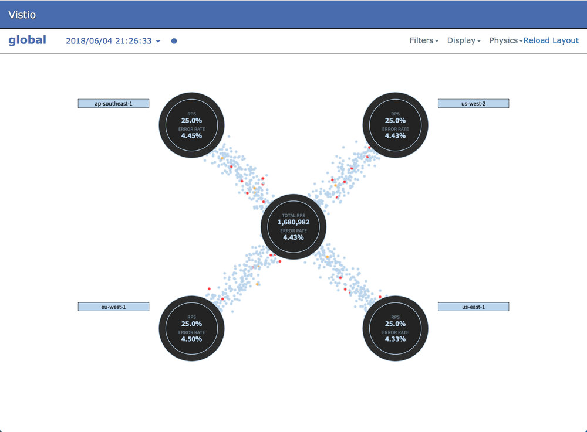

本文为翻译文章，点击查看原文。
Vistio GitHub地址：https://github.com/nmnellis/vistio
Vizceral是Netflix发布的一个开源项目，用于近乎实时地监控应用程序和集群之间的网络流量。Vistio是使用Vizceral对Istio和网格监控的改进。它利用Istio Mixer生成的指标，然后将其输入Prometheus。Vistio查询Prometheus并将数据存储在本地以允许重播流量。
Vizceral有两个可视化级别，全局可视化和集群级别可视化。在全局范围内（如上所示），您可以通过Istio Ingress Gateway等入口点将从Internet到Istio服务网格网络的网络流量可视化，或者您可以在Istio服务网格网络中显示总网络流量。
在集群级别（如下所示），您可以可视化内部网格的流量。通过设置警告和错误级别警报，当应用程序出现问题时可以被快速检测出来。
在Istio服务网格中安装Vistio
依赖
- Prometheus
- Istio 0.7或更高版本
假设
以下Demo使得这些假设更容易部署。如果您的环境设置不同，则可能需要将代码下载到本地并编辑一些文件。
- Prometheus部署在
istio-systemnamespace下，可以通过http://prometheus.istio-system:9090地址访问 - Istio mixer启用了
istio_request_countmetric - Kubernetes集群包含有
standardStorageClass - 为了便于部署已安装了Helm（可选）
前言
如果您还尚未部署服务网格，可以按照此Istio Bookinfo Demo中的说明部署Istio及其示例应用程序。您需要能够在应用程序之间生成流量。要测试指标是否从Mixer正确发送到Prometheus，您可以运行以下Prometheus查询istio_request_count，应该会看到多个条目。
部署Vistio
您可以选择说过kubectl或者Helm来部署Vistio，下面会分别介绍两种部署方式。有些变量可能需要根据您自己的环境来修改。
下载Vistio（可选的）
如果你想通过Helm部署Vistio，你将需要在GitHub上下载项目来获取Helm模板。此外，如果上述假设之一不符合您的需求（例如prometheus url不同），则应手动签出并编辑文件。
git clone https://github.com/nmnellis/vistio.git
使用kubectl部署
kubectl apply -f https://raw.githubusercontent.com/nmnellis/vistio/v0.1.2/vistio-mesh-only.yaml -n default
使用Helm部署
切换到Vistio项目的根目录，运行helm install。
helm install helm/vistio -f helm/vistio/values-mesh-only.yaml --name vistio --namespace default
验证和暴露Vistio Web/API
验证应用程序已经启动并在运行。使用kubectl port-forward命令暴露应用程序。
验证vistio-api
kubectl describe statefulset vistio-api -n default
日志检查（可选的）
您应该能够从vistio-api的日志中查看是否存在与Prometheus的连接/查询相关的错误。
kubectl logs -n default -c vistio-api $(kubectl -n default get pod -l app=vistio-api -o jsonpath='{.items[0].metadata.name}')
验证vistio-web
kubectl describe deployment vistio-web -n default
暴露vistio-api
我们使用kubectl port-forward将vistio-api暴露到http://localhost:9191。
kubectl -n default port-forward $(kubectl -n default get pod -l app=vistio-api -o jsonpath='{.items[0].metadata.name}') 9091:9091 &
验证vistio-api
vistio-web调用vistio-api来渲染服务网格。访问http://localhost:9091/graph您应该会看到类似下列的输出。
暴露Vistio
在另一个命令行终端中，暴露Vizcera UI到http://localhost:8080。
kubectl -n default port-forward $(kubectl -n default get pod -l app=vistio-web -o jsonpath='{.items[0].metadata.name}') 8080:8080 &
访问Vistio
如果一切都已经启动并准备就绪，您就可以访问Vistio UI，开始探索服务网格网络，访问http://localhost:8080您将会看到类似下图的输出。
探索
在全局范围内，您将看到Istio网格内所有请求的总和。如果您部署了istio-ingressgateway，则可以选择显示通过其他配置从网格外部接收的流量，参考使用Ingress Gateway部署Vistio。
如果您点击istio-mesh气泡，您将能够查看您的网状网络。
在您的Istio网格中，您可以使用许多可视化工具来帮助您查明故障的应用程序。
使用屏幕右上方的过滤器可以快速过滤出错误率较高的应用程序。通过高级配置，当错误率超过特定值时，也可以触发警报。警报将显示给定应用程序的当前错误率趋势。
问题排查
访问http://localhost:9091/graph，如果您从vistio-api中看到以下输出，表示某些功能无法正常工作。正确的输出显示在教程上面。
1. 检查vistio-api日志中是否有错误——在大多数情况下，vistio-api将记录与Prometheus通信时遇到的任何问题。
kubectl logs -n default -c vistio-api $(kubectl -n default get pod -l app=vistio-api -o jsonpath='{.items[0].metadata.name}')
2. 验证Prometheus查询——vistio-api使用以下查询检索其数据。您应该确保Prometheus内部的数据都存在。
# Global Level Query
sum(rate(istio_request_count[1m])) by (response_code)
# Cluster Level Query
sum(rate(istio_request_count[1m])) by (source_service,destination_service,response_code)
3. 提交Issue——如果遇到问题无法解决请提交Issue：https://github.com/nmnellis/vistio/issues